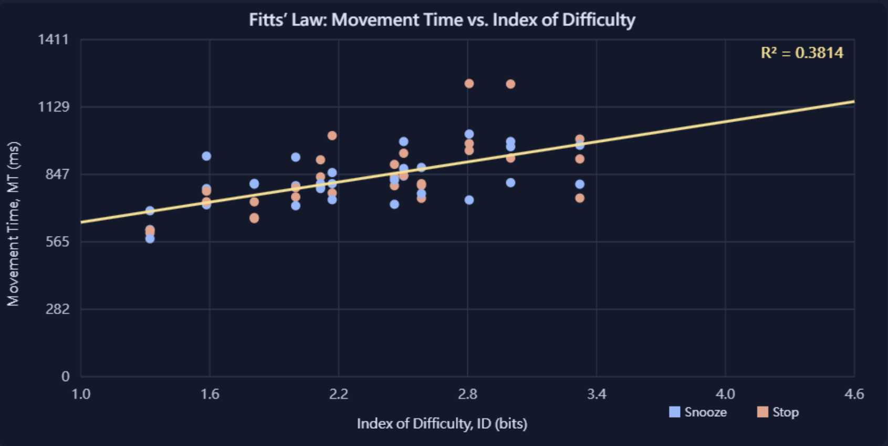

⏰ Alarm Clock — Fitts' Law Lab
HCI Assignment 1 · Part II · Snooze vs. Stop
Scenario & Research Design
Scenario: A user responds to a morning smartphone alarm by selecting Snooze or Stop. Innovation: A familiar alarm interface replaces abstract pointing targets while button width and center-to-center distance are systematically varied. Application: Study how alarm control placement and size affect pointing speed and errors. This desktop-sized test arena is a controlled simulation, not a claim about real sleepy users or physical smartphone touch ergonomics.
Protocol: 3 widths (40, 60, 80 px) × 4 distances (120, 200, 280, 360 px) × 5 repetitions = 60 successful trials. Each control is requested 30 times overall. Press Begin once and click the START pad once. Thereafter, each correct click immediately presents the next target; no repeated START clicks are needed. Each target is placed exactly A pixels from the previous correct target center. The timer for each trial starts at the previous correct click (or initial START click) and ends at the next correct click. This continuous protocol includes target recognition time, so MT is an operational pointing-and-selection time rather than isolated motor movement time. Incorrect selections are counted as errors and do not end the trial. Do not resize or zoom the page during a session. A/W are measured in CSS pixels; the movement time includes selection and any errors.
Press Begin to prepare the first trial.
Experiment Canvas
For consistent measurements, use a desktop browser at 100% zoom. The header is fixed above the 860 × 550 CSS-pixel experiment area, so the moving buttons cannot cover the clock or wake-up message.
Experiment Analysis
Complete at least two distinct difficulty levels to calculate regression. Regression uses successful trials (including their incorrect attempts in elapsed MT).
Shannon formulation: ID = log₂(1 + A/W); MT = a + b × ID. R² is the coefficient of determination. Regression is recomputed after each successful trial.
Experiment trial Data
| # | Target | A (px) | W (px) | ID (bits) | MT (ms) | Errors |
|---|---|---|---|---|---|---|
| No trials yet. | ||||||
Report
Scenario
This experiment simulates a morning alarm interface with two buttons, Snooze and Stop. A user must recognize the instructed action and select the correct button quickly and accurately. The study examines how target distance (A) and target width (W) relate to selection time.
Innovation
Instead of presenting only one abstract target, the experiment displays two recognizable alarm controls simultaneously. The intended button is specified for each trial, and the other button remains visible as a distractor. This creates a familiar decision context while systematically manipulating target distance and width.
Why I Chose This Design
I chose an alarm clock because dismissing or snoozing an alarm is a familiar, time-sensitive interaction. It requires users to distinguish between two actions that have different consequences. A mistaken selection may stop an alarm when the user intended to snooze it, or snooze it when the user intended to get up. This makes button size, placement, and clear action selection meaningful interface design questions.
Real-World HCI Problem and Application
The HCI problem addressed is how the size and placement of adjacent action controls influence the speed and accuracy of selecting the intended command. Smaller targets and longer pointing distances may increase selection time, while a second visible button introduces the possibility of selecting the wrong action. The results can help motivate interface designs with appropriately sized, well-separated, clearly distinguishable controls. This desktop mouse experiment is a controlled simulation, not a direct test of touchscreen use or of people who have just awakened.
Participant and Experimental Method
I was the participant in this experiment. I personally completed one session consisting of 60 successful trials: 3 target widths (40, 60, 80 CSS px) × 4 target distances (120, 200, 280, 360 CSS px) × 5 repetitions. Snooze and Stop were each the instructed target in 30 trials. Movement/selection time was measured from the preceding correct click (or initial START click) to the next correct click, including target recognition and any incorrect attempts. Therefore, these are single-participant results, not an average across multiple participants.
My Empirical Fitts’ Law Formula
Using the Shannon formulation, ID = log₂(1 + A/W) and MT = a + b × ID. For my completed 60-trial session, linear regression produced a = 506.060 ms, b = 140.445 ms/bit, and R² = 0.3814.
MT (ms) = 506.060 + 140.445 × log₂(1 + A/W)
The equation above describes my recorded session. The interactive analysis below independently recalculates coefficients from whichever CSV dataset is currently loaded.
My Results: Scatter Plot and Regression

Results and Interpretation
The fitted slope is positive, indicating that selection time generally increased as index of difficulty increased, consistent with the direction predicted by Fitts’ Law. The R² value of 0.3814 indicates that ID explained approximately 38.14% of the observed variation in selection time in my dataset. The relationship is noticeable but does not explain all trial-to-trial variability.
Because the interface shows both Snooze and Stop, the recorded time may include visual recognition and decision-making in addition to pointing and clicking. These processes, along with natural variation between trials, could contribute to the remaining variability; this experiment does not isolate or establish their individual effects.
Limitations
The dataset comes from one participant (myself) in one desktop-mouse session. The results cannot establish population-level effects or be directly generalized to touchscreen interactions or waking-up conditions.
Screen Recording
Watch the screen recording of the Alarm Clock Fitts’ Law experiment below.
The recording is available below.